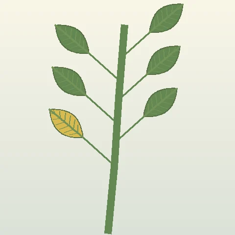

Natural aging
A few older leaves turning yellow
This is one possible explanation. Compare the signs below with those on your plant.

What to look for
Mark yellowing leaves and note whether they are all among the oldest leaves.
Possible causes and next steps
If only a few old leaves yellow while shoots grow well, monitor them. Check roots and watering if young leaves follow.